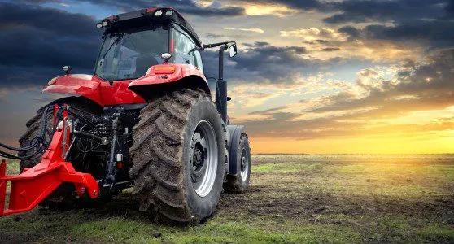
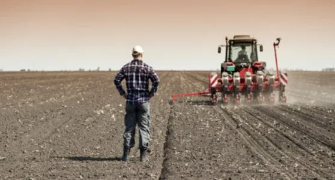
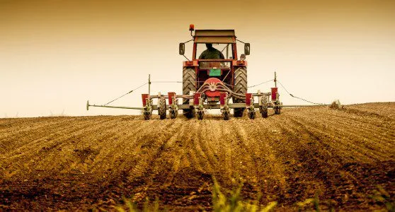
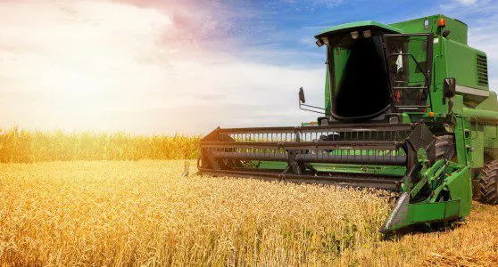
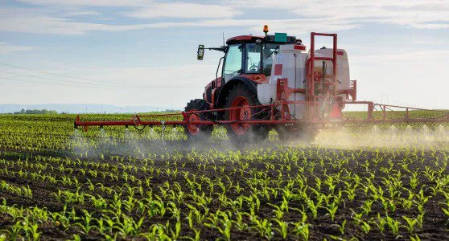

Blog do Agronegocio

Sua função é dar propulsão motora, para implementos que executarão algum tipo de trabalho mais específico, como por exemplo aração do solo e prepará-lo para o plantio.
É o implemento que acoplado aos tratores tem a função de abrir espaços no solo e distribuir as sementes em quantidades corretas no solo.
Tem função similar de uma semeadora, porém focada no plantio de mudas, sendo capaz de realizar o plantio de fragmentos vegetativos das plantas, depositando na terra.
Sua função é realizar a colheita de cereais e grãos de maneira ágil. As colheitadeiras também são capazes de diferenciar os tipos de cereais, separá-los e realizar a limpeza das sementes.
Eles têm a função de controlar as pragas e insetos, aplicando defensivos agrícolas, inseticidas e fertilizantes, geralmente líquidos.
Copyright © 2024 blog do agronegocio